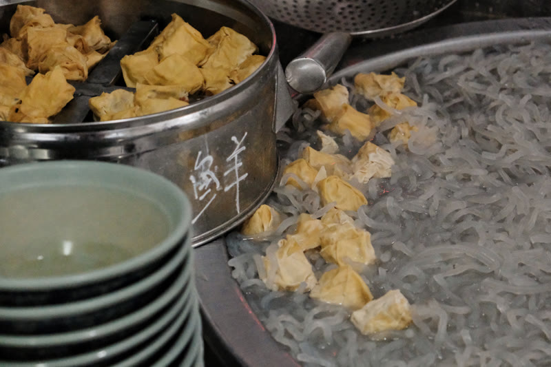
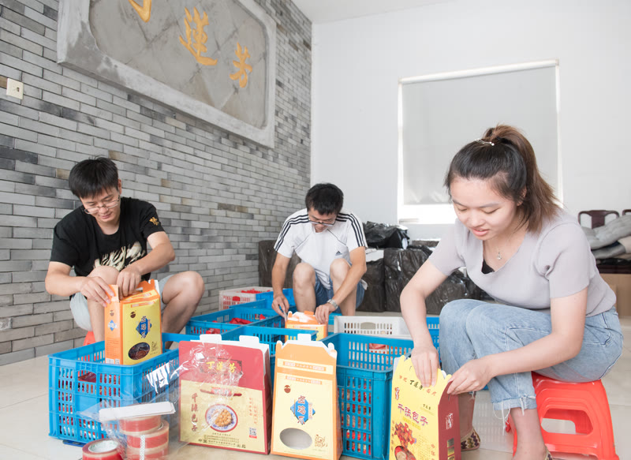
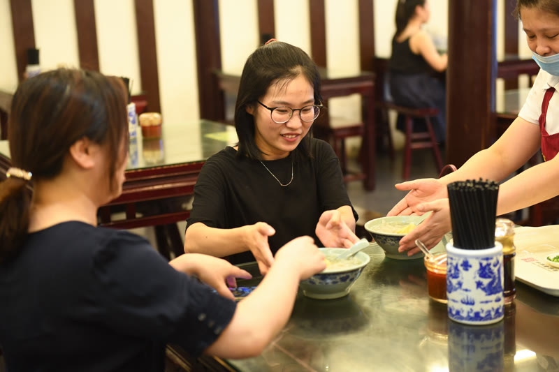

老字号还年轻吗？
在湖州丁莲芳寻找答案
清光绪四年，29岁的丁莲芳挑着扁担在湖州骆驼桥叫卖第一碗千张包子丝粉头。 一百四十七年后，我们走进衣裳街，用镜头和文字寻找一个问题的答案： 这碗老味道，今天还在被年轻人一口口吃下去吗？
湖州的雨季，衣裳街的石板路泛着青光。下午三点，"丁莲芳"的招牌下，食客络绎不绝。有人夹起一只三角棱柱形的千张包，在辣油碟里一蘸，送进嘴里——这个动作，在这座城市已经被重复了一百四十七年。
丁莲芳千张包子店，始创于清光绪四年（1878年），首批"中华老字号"，浙江省非物质文化遗产。它的千张包每只28克，3厘米等边三角棱柱，皮用26×42厘米黄豆特制千张，馅是去筋去膜去膈的纯精腿肉。从挑担叫卖到天猫旗舰店，从日销百来客到日产逾7000只——这是一道小吃的百年长征，更是一个关于"本土文化是否还活着"的当代样本。
从一副扁担开始
1878年的湖州，丁莲芳还是城里一个挑葱卖菜的小贩。风雪严冬，糊口艰难。29岁那年，他下定决心改行做"吃"的生意。但市面上烧饼、粽子、馄饨、豆浆什么都有了。他观察到街头已有牛肉丝粉汤的摊子，灵机一动：把千张皮裹上肉馅做成包子，放进丝粉汤里卖——"千张包子丝粉头"，就这样诞生了。
"他选择了一个别人没做过的方式——不是模仿，是创造。"
白天备料，晚上出摊。地点选在骆驼桥堍鱼行口，当时湖州最繁华的地段。每晚八点到子夜一点，看夜戏散场的市民、磨夜的游民成了第一批顾客。一天卖出百来客。三年后，丁莲芳听劝改良：形状从长到方最终定型为三角棱柱，馅料加入开洋（虾米）提鲜，细粉丝换成久煮不糊的绿豆粗丝粉。三次改良，彻底摆脱家常色彩，日销量翻倍。
一只千张包的"不将就"
不是随便一块豆腐皮裹点肉就叫千张包子。
肉，只用鲜猪后腿纯精肉。洗清沥干之后，经过五道工序——去骨、去皮、去膈、去膜、去筋——然后切片、切条，最终切成1厘米见方的肉粒。手工拌入上等黄酒、味精、白糖、食盐。一斤肉出一斤馅，没有水分。
皮，取26厘米×42厘米黄豆特制千张。26厘米边切去5厘米做垫头，对折成21×21厘米，再对角切成两个三角形。皮薄如蝉翼，但久煮不破、韧而不烂——这是湖州黄豆和水的秘密。
辅料同样讲究：开洋用上等黄酒浸泡后入馅；干贝剔除杂质，黄酒浸泡蒸熟后入馅；笋衣只取孝丰蝴蝶片，取其嫩薄；芝麻入锅炒熟捣碎。每一样都经过单独处理，才最终进入一只28克的三角包子里。
走，去吃一碗真的
说的再多，不如亲眼看看。我们的镜头跟随一位普通的下午，走进衣裳街丁莲芳总店——从门头到后厨，从点单到上桌。
收银台前，点单声此起彼伏。后厨里，师傅们手上动作飞快：三角千张平铺、放垫头、取肉馅加干贝开洋、手工卷裹成3厘米三角棱柱状、五个一捆笋壳丝扎好、入毛竹丝篮排好、毛竹片夹住固定——一套流程行云流水。不锈钢定型蒸熟器里，蒸汽氤氲。1978年，第三代传承人陈连江设计了这个设备，以蒸汽替代沸水煮，让包子的三角造型更挺括，色香味全面稳定。

同样一碗千张包，不同的人怎么想？
我们分别在衣裳街上采访了两位食客——一位本地的老常客，一位外地专程来的年轻人。他们的回答，或许比任何数据都更能回答"老字号还年轻吗"这个问题。
"就吃这小时候的味道。"
简短的一句话，分量十足。这位本地大叔说不清自己来了多少次，也讲不出什么华丽的评价。对他来说，丁莲芳就是生活的一部分——不需要理由，不需要比较。这种"理所当然"，是一个品牌与一座城市之间最深刻的关系。
"这个确实很好吃。之前没吃过，顺路过来看一看。"
这位外地游客第一次吃千张包子，没有"情怀滤镜"，纯粹是路过、尝试、被味道征服。他的评价反过来印证了本地大叔的话——这碗老味道不是依赖"老"字在支撑，而是真的好吃。一个147年的产品，依然能让一个毫无预期的路人说出"确实很好吃"，这才是老字号真正的底气。
哪些变了，哪些没变？
147年的时间，足够改变很多东西。
变了的是渠道：从天猫旗舰店到外卖平台，千张包已经可以被装进快递箱发往全国各地。变了的是产量：从日销百来客到日产逾7000只。变了的是设备：紫铜大暖锅变成了不锈钢定型蒸熟器。变了的是门店：从骆驼桥堍的街边摊变成了衣裳街上窗明几净的现代化门店。
没变的是那个三角：3厘米等边三角棱柱，一百四十七年不走样。没变的是那层皮：26×42厘米黄豆特制千张，薄如蝉翼、久煮不破。没变的是那口馅：纯精腿肉去筋去膜去膈，开洋、干贝、笋衣、芝麻，每一样都单独处理后才入馅。没变的是那句话：费新我题的"鲜而精，名乃扬"，到今天还挂在店里。

本土文化的年轻化突围
我们经常讨论"老字号如何年轻化"——包装要换、营销要做、IP要打造。但在丁莲芳的故事里，或许答案没有那么复杂。
当一位本地大叔可以不假思索地说出"就吃这小时候的味道"，当一位外地游客可以毫无预期地说出"这个确实很好吃"，当三角棱柱的3厘米造型一百四十七年不走样——本土文化就没有停在被怀念的那一端。它正在被消费、被讨论、被拍进视频、被写进小红书攻略、被装进天猫快递箱里。
本土文化的年轻化突围，不需要口号，只需要有人还在继续做、继续吃。
真正能留下来的老味道，从来不只靠"老"字活着。靠的是：每一只28克的千张包，皮还是黄豆特制千张皮，馅还是去筋去膜去膈的纯精腿肉，形还是三厘米等边三角。更靠的是——今天仍有人愿意走进去、坐下来、夹起一只千张包，蘸上辣油，再把它讲给别人听。

📱 沉浸式互动体验
本报道配套14屏融媒体H5已上线，包含完整历史叙事、工艺解密、3段实拍视频和14个关键历史节点时间线。建议手机扫码或点击下方链接体验。
打开 H5 互动特辑 →https://jayyuziyang-lang.github.io/yzy/h5-dinglianfang/